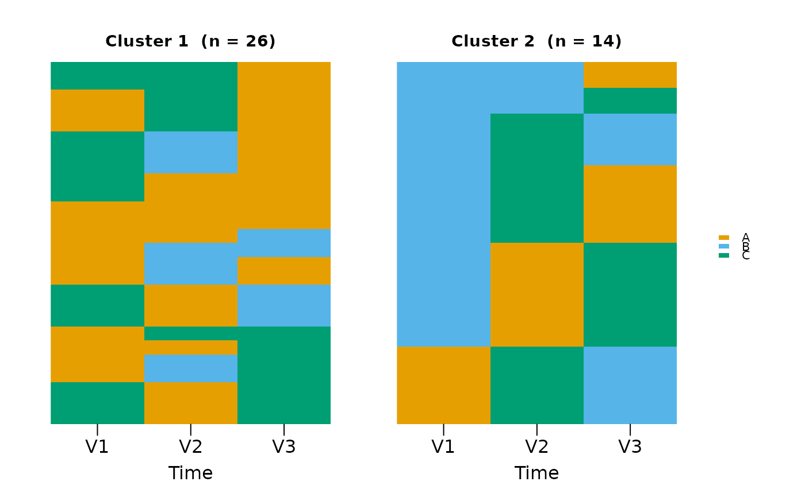

cluster_mmm() clusters sequences by fitting a mixture of first-order
Markov chains and returns the fitted net_mmm object: the same fit, with
the same arguments, as build_mmm(). The fit holds each sequence's
subgroup and posterior probabilities, the mixing proportions, the
information criteria and the subgroups' transition matrices.
Pass the fit to build_network() to get one network per subgroup, or use
cluster_network(..., cluster_by = "mmm") to fit and build the networks
in one call. build_mmm() explains how to read the fit and what to check
before trusting it.
Arguments
- data
The sequences: a data frame with one row per sequence and one column per position, a
netobjector barecograph_networkbuilt from sequences, or atnamodel (whose stored states are decoded to their labels). Columns take the same roles as inbuild_network(): an id or a covariate is not a position, and the columns set aside are named in a message and kept as metadata. Association networks (cor,pcor,glasso,ising,mgm) hold variables, not sequences, and raise an error of classnestimate_bad_input.- k
The number of subgroups (mixture components), a whole number of at least 2. Default
2.- n_starts
How many starting configurations to try, a positive whole number. More starts make it likelier that the best local maximum is found. Default
50.- max_iter
The most EM iterations a start may run, a positive whole number. Default
200.- tol
The convergence tolerance: EM stops when the log-likelihood changes by less than this between iterations (with
covariate_effect = "em", also when its relative change does). A finite positive number; default1e-6.- smooth
A pseudo-count added to every transition count before the matrices are estimated, so a transition unseen in a subgroup gets a small probability instead of zero. A finite non-negative number; default
0.01.- seed
An integer that makes the random starts reproducible. Default
NULL. The session's own random stream is left as it was.- covariates
Variables describing each sequence (such as a course or a grade), given as a column name, a character vector of names, a one-sided formula or a data frame, as in
build_clusters(). For anetobject, names are looked up in its metadata first, so a typical call isbuild_mmm(net, k = 3, covariates = "session_label"). How they enter the model is set bycovariate_effect. DefaultNULL.- covariate_effect
How
covariatesenter the model."em"(default) makes the mixing proportions depend on them during EM, so they shape the subgroups found and add(k - 1) * pparameters forpcovariate columns; rows with a missing covariate are dropped first, with a warning."posthoc"fits a plain mixture on every sequence and relates the covariates to the subgroups only afterwards, with a multinomial logit, so neither their values nor their missingness change the subgroups. Ignored withoutcovariates.- estimator
How the after-fit multinomial logit is estimated; it never affects the EM.
"auto"(default) uses Firth's penalised likelihood (brglm2::brmultinom(), finite under separation) when a cell of the subgroup-by-covariate table has fewer than 5 sequences, andnnet::multinom()otherwise."firth"and"multinom"force one of them ("multinom"warns about separation risk), and"chisq"runs descriptive tests instead of a logit.build_clusters()has the details. Ignored withoutcovariates.- cluster_by
The clustering family. Only
"mmm"(the default) is accepted; it is there socluster_mmm()andcluster_network()share one call shape. Any other value raises an error that points tocluster_network().- ...
Not used; any extra argument raises an error.
Value
A net_mmm object, exactly as build_mmm() returns it: print(),
summary() and plot() read it, build_network() turns it into a
netobject_group with one network per subgroup, and
cluster_diagnostics() gives the classification and, for sequences
built from long data with actor/session, session_ids() gives each
sequence's subgroup. build_mmm() lists its fields. For HTNA input,
the actor partition is kept and restored when the fit is turned into
networks with build_network() or as_htna().
Details
cluster_mmm() takes the arguments of build_mmm() plus cluster_by, so
its call has the same shape as cluster_network().
See also
build_mmm(), build_network(), and cluster_network() for
fitting and building the per-cluster networks in one call.
Examples
seqs <- data.frame(V1 = sample(c("A","B","C"), 30, TRUE),
V2 = sample(c("A","B","C"), 30, TRUE))
fit <- cluster_mmm(seqs, k = 2, n_starts = 1, max_iter = 10, seed = 1)
fit
#> Mixed Markov Model
#> Sequences: 30 | Clusters: 2 | States: 3
#> ICs: LL = -64.101 | BIC = 186.022 | AIC = 162.201 | ICL = 188.063
#> Quality: AvePP = 0.967 | Entropy = 0.197 | Class.Err = 3.3%
#> Status: did not converge in 10 iterations
#>
#> Cluster N Mix% AvePP
#> 1 28 (93.3%) 91.6% 0.973
#> 2 2 ( 6.7%) 8.4% 0.888
cluster_diagnostics(fit)
#> Cluster Diagnostics (mmm) [k = 2]
#> Sequences: 30 | Clusters: 2 | States: 3
#> Quality: AvePP = 0.967 | Entropy = 0.197 | Class.Err = 3.3%
#> ICs: LL = -64.101 | BIC = 186.022 | AIC = 162.201 | ICL = 188.063
#>
#> Cluster N Mix% AvePP Class.Err%
#> 1 28 (93.3%) 91.6% 0.973 2.7%
#> 2 2 ( 6.7%) 8.4% 0.888 11.2%
# \donttest{
# Visualise with sequence_plot
seqs <- data.frame(
V1 = sample(LETTERS[1:3], 40, TRUE),
V2 = sample(LETTERS[1:3], 40, TRUE),
V3 = sample(LETTERS[1:3], 40, TRUE)
)
fit <- cluster_mmm(seqs, k = 2)
sequence_plot(fit, type = "index")

# }